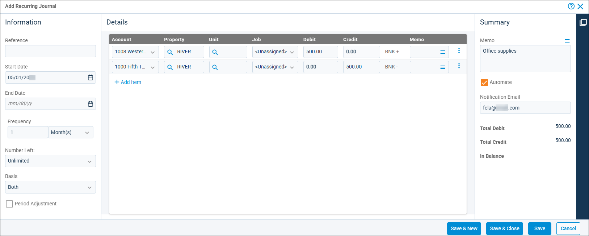

Source: https://rmxhelp.rentmanager.com/Topics/Express/Other/Journal-Recurring-Add.htm
Add a Recurring Journal
Recurring journals are journal entries that are used on a recurring basis (daily, weekly, or monthly) to perform money transfers between general ledger (GL) accounts. Recurring journals are saved as templates and can be posted manually as often as needed or be configured to post automatically using Task Automation. All recurring journals in your database are listed in the Recurring Journals page, and from there you can view the details of any recurring journal.
Related Privileges
| Group | Privilege | Column |
|---|---|---|
| Accounting | Recurring journals | Add, View |
For more information, refer to Control User Access.
To create a new recurring journal, do the following:
-
Go to
 arrow_forward Accounting arrow_forward Journals arrow_forward Recurring Journals.
arrow_forward Accounting arrow_forward Journals arrow_forward Recurring Journals.
The Recurring Journals page displays. -
Click
 Add Recurring Journal.
Add Recurring Journal.
More Information
If you have created memorized journals, you can use one as a basis for a new recurring journal by selecting
 arrow_forward Load Memorized.
arrow_forward Load Memorized. -
In the Information section, enter information in the following fields:
Field Description Basis
Related Privileges
Group Privilege Column Accounting Set journal basis (cash or accrual) Enabled For more information, refer to Control User Access.
The accounting method for how the journal entry affects financial reports.
Cash
The journal entry affects only reports run in a cash accounting basis. All transactions are recorded when cash is paid or received, and unpaid invoices and expenses are not included in financial reports.
Accrual
The journal entry affects only reports run in an accrual accounting basis. All transactions are recorded as they are incurred, and unpaid invoices and expenses are included in financial reports.
Both
The journal entry affects all reports.
End Date
The date this recurring journal should no longer post new one-time journals.
Frequency
The number of times a new one-time journal should be created from this template. For example, 1Month(s) means post once every month, 2Month(s) means post once every two months, and so on.
Number Left
How many more times this journal should be posted.
Period Adjustment
Notates that this journal entry is an adjusting entry. This allows for the entry to optionally be excluded from financial reports.
Reference
A short note or reference number to identify the purpose of this journal entry.
Start Date
The date this recurring journal should first be posted.
-
In the Details section, click
 Add Item to create a new line item. Then, enter information in the following tabs:
Add Item to create a new line item. Then, enter information in the following tabs:Column Description Account
The GL account to adjust with this journal entry.
Credit
The amount you wish to credit the specified account. Credits increase income, equity, and liability accounts.
Debit
The amount you wish to debit the specified account. Debits increase asset and expense accounts.
Job
If applicable, the name of the job to track the journal entry. For more information, refer to Jobs (Page).
Related Preferences
In order to use the job costing tool in Rent Manager, Enable job costing must be checked in system preferences. For more information, refer to General Options (System Preferences).
Memo
An optional additional message regarding this account adjustment (e.g., Asset Depreciation, Security Deposit Transfer, Company Payroll).
Property
The property involved in the account adjustment.
Unit
If applicable, the unit associated with the account adjustment.
-
In the Summary section, enter information in the following fields:
Field Description Automate
If enabled, automatically posts this journal based on the posting schedule in the Information section. The journal is automatically posted as a new one-time journal at the designated times.
Related Preferences
If task automation is not enabled for recurring journals in the Task Automation system preferences, a warning displays at the bottom of the page when you try to save. For more information, refer to Task Automation (System Preferences). Task Automation is available for Rent Manager Online users only.
Balance
If the Total Debit and Total Credit are equal, In Balance displays. If they are not equal, Not In Balance displays.
Memo
A longer note to provide further information about the purpose of the journal entry transaction (e.g., Security Deposit Transfer). To select a memorized comment that already exists, select
.Notification Email
The email address that receives a notification for each successful or failed automatic posting of this journal. If entering more than one email address, separate each with a semicolon (;).
Total Credit
The total amount of credit entries in the journal.
Total Debit
The total amount of debit entries in the journal.
-
To finish, click Save & Close, or to create additional recurring journals, click Save & New.
The recurring journal is created and, if Automate is enabled, the journal automatically posts on the next applicable date.